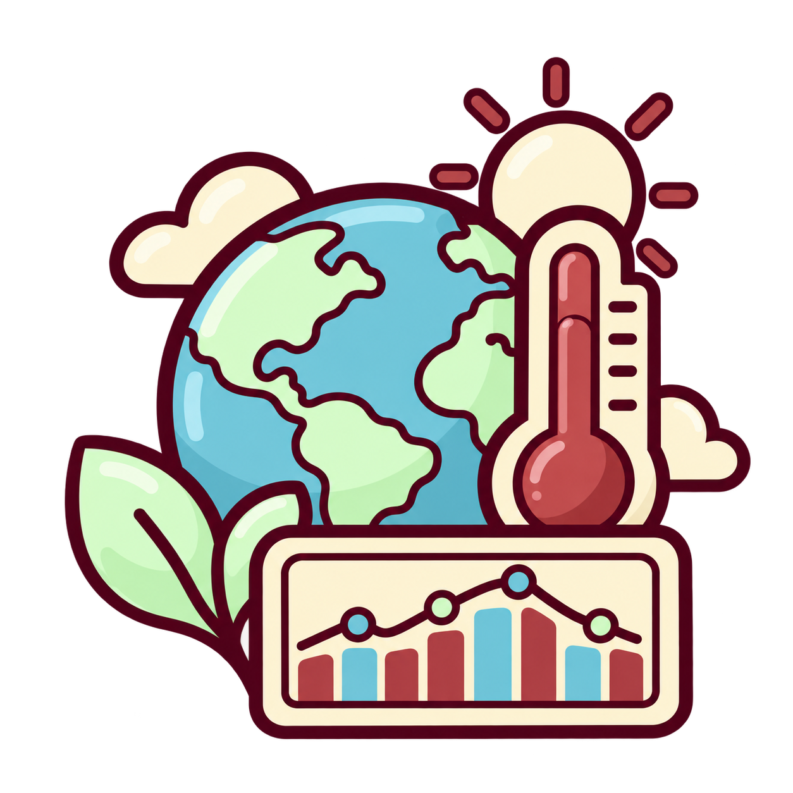

TeamFlow Dashboard
An internal dashboard designed to help international development teams organize tasks, monitor project progress, and share important updates.
Technologies: HTML, CSS and JavaScript
View projectAn internal dashboard designed to help international development teams organize tasks, monitor project progress, and share important updates.
Technologies: HTML, CSS and JavaScript
View projectA web-based tool that allows software teams to report bugs, assign them to developers, and track their status during development.
Technologies: HTML, CSS, JavaScript, and Google Cloud
View projectA data analysis tool that processes satellite images and helps researchers identify environmental changes in different regions of the Earth.
Technologies: Python, NumPy, and OpenCV
View project
An interactive dashboard that presents satellite data about temperature changes, deforestation, and other environmental developments.
Technologies: Python, Pandas, and Matplotlib
View projectA program that uses singular value decomposition to reduce the size of satellite images while preserving their most important visual information.
Technologies: Python, NumPy, and Linear Algebra
View projectPortfolio entries are fictional examples. Project images are AI generated content.